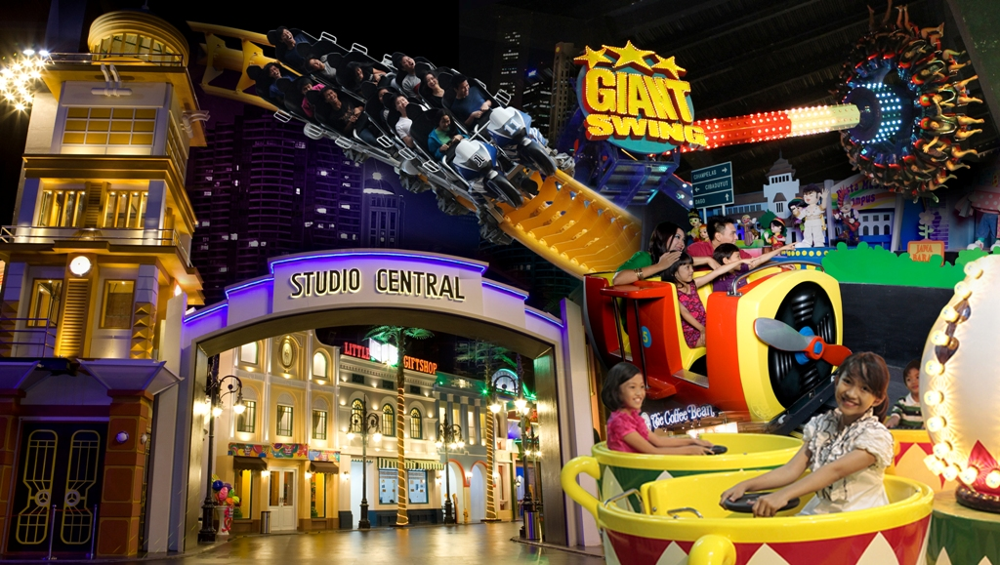
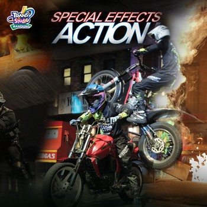
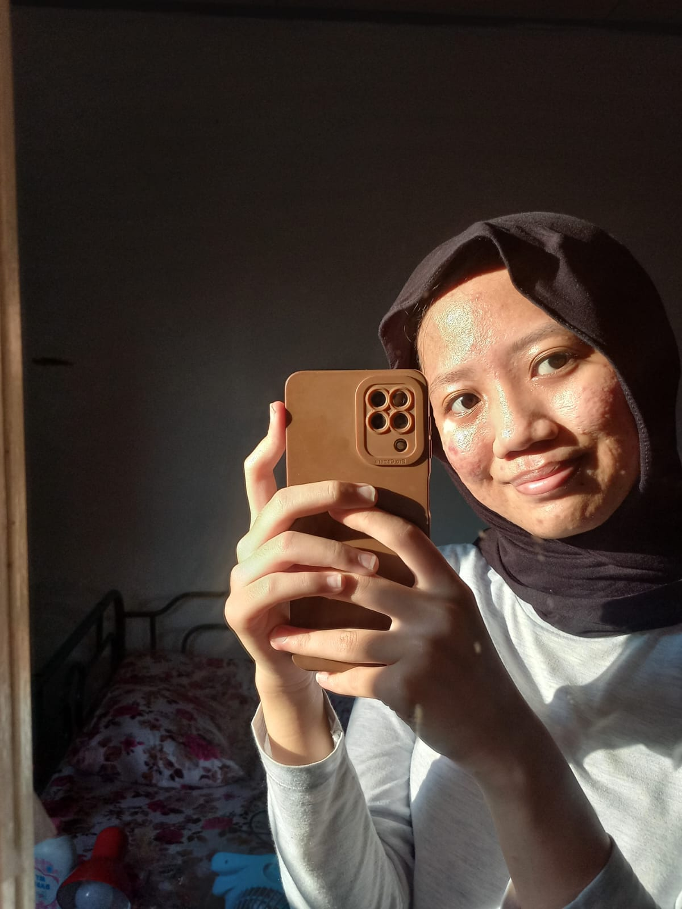

5 Wahana ekstrim Trans Studio Bandung yang Menarik Perhatian
Trans Studio Bandung merupakan salah satu dari banyaknya destinasi wisata yang ada di Bandung, Jawa Barat. Trans Studio Bandung yang terletak di Jalan Gatot Subroto No. 289, memiliki 20 wahana seru yang terbagi menjadi 3 zona. Ketiga zona tersebut antara lain yaitu Studio Center, Magic Corner, dan Lost City.
Zona-zona di Trans Studio Bandung

- Zona Magic Corner merupakan zona keajaiban yang memiliki sentuhan special yang akan mempesonakan perjalanan anda selama di Trans Studio Bandung. Suasana magic akan menyihir anda seketika dan membuat anda begitu yakin pada apa yang ada di depan mata. Pengunjung akan hanyut dalam sensasi yang ditimbulkan oleh dunia penuh keajaiban.
- Zona Lost City, merupakan zona ekspedisi yang bertemakan hutan amazon yang akan menjadi bagian dari petualangan anda dalam menjelajahi kota yang hilang.
- Zona Studio Central, satu kawasan spektakuler yang dikemas dalam tampilan ala Hollywood era 60-an. Pada zona ini juga memiliki wahana ekstreem yang menjadi favorit semua orang dan juga dunia anak-anak. Zona ini juga menyediakan tontonan pertunjukan yang luar bisa bertaraf internasional di Trans City Theater dan Ampitheater.
Ketentuan Minimal Tinggi Badan
Beberapa wahana di Trans Studio Bandung memiliki syarat minimal tinggi badan. Berikut ini 5 wahana ekstreem di Trans Studio Bandung yang memiliki syarat minimal tinggi badan.
| Wahana |
Minimal Tinggi badan |
| Racing Coaster |
135 cm |
| Giant Swing |
130 cm |
| Vertigo |
130 cm |
| Jelajah |
120 cm (untuk anak kecil wajib didampingi orang dewasa) |
| Pemburu Badai |
135 cm |
Untuk info lebih lanjut, kunjungi: Trans Studio Bandung
Nama: Jauharah Kusumastuti
NIM: 11210251000107
Kelas: 5A
Program Studi: Ilmu Perpustakaan
